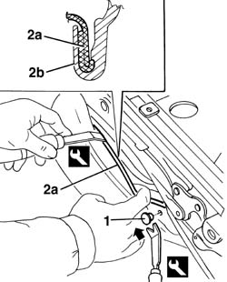
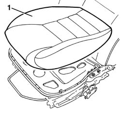
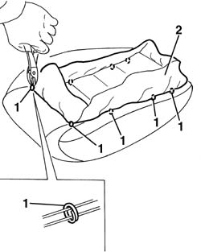

7045A86 (One), front SEAT FRAME left or right - R.R.
- Path
- Procedures > 70 FITTINGS > 7045 FRONT SEATS > 7045A front seat assembly > 7045A86 (One), front SEAT FRAME left or right - R.R.
- Kind
- repair procedure (removal / refitting; the operation number is the code)
- Applies to
- all engines; all production periods
- Interactive page
- https://sloeber94.github.io/elrnDB-a156/en/#/3238883
Applies to: all engines; all production periods
 Removing
Removing
 Refitting
Refitting7045A44 seat interior guard - r r
1. Prise up the retaining stud from both sides of the seat using the special tool.
 | Name | Country |
|---|---|---|
1 | Scraper blade | 1.823.015.000 |
2. Prise up trim surround (2a) using the special tool. Start from one lateral end. The detail in the figure shows a cross-section of profile (2b) securing trim (2a) in place.
| Name | Country |
|---|---|---|
1 | Scraper blade | 1.823.014.000 |

Applies to: all engines; all production periods
1. Fold down the seat and remove the seat padding and trim.

Applies to: all engines; all production periods
1. Turn the cover upsidedown and cut the upper retaining hooks.
2. Remove the trim from the padding.

Applies to: all engines; all production periods
Refitting
RemovingCheck that the cover is intact and shows no signs of damage.
Reposition the cover on the upholstery.
Hook the upper retaining hooks using the special tool.
| Name | Country |
|---|---|---|
1 | Pliers for metal points | 1.878.017.001 |
Turn the cover over and, after having positioned it, hook the lower retaining hooks using the special tool.
Refit the cushion with trim.
Fit the cover surround.
Do up the retaining studs on both sides of the seat.
Mould the cover on the padding.
Topics linked from this page (2)
Topics that link to this page (6)
- 7045A80 front seat cushion squab (outer) joint assembly - r r with seat removed
- 7045A82 front seat cushion/squab (interior) joint assembly - r r with seat removed
- 7045A87 Front seat CUSHION COVER, left or right - R.R .
- 7045A90 Front seat CUSHION UPHOLSTERY, left or right - R.R. with seat removed
- 7045A91 Front seat, CUSHION UPHOLSTERY left or right - R.R.
- 7045A92 Front seat COVER, left or right - R.R. with seat removed